João Maria
Vianney sentiu-se inclinado, desde a infância para DEUS. Mas como todo homem,
teve de reformar um 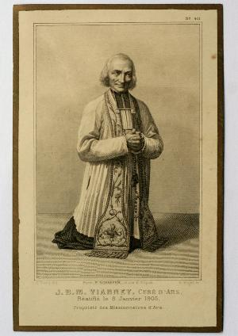
São muitos os testemunhos. Ouçamos em primeiro lugar o Padre Beau, Pároco de Jassans, que foi o confidente por excelência dele, pois foi confessor do Cura d’Ars durante os últimos treze anos de sua vida: “Ele jamais fraquejou um só momento... Lembro-me como ele fazia o Sinal da Cruz, rezava o benedicite antes da refeição e uma Ave Maria ao bater as horas. E com que angélica piedade rezava o breviário! Faltam-me palavras para exprimir aquela pureza de expressão e beleza do gesto! Ele me inspirava veneração e respeito”.
Os peregrinos e os religiosos diziam: “Jamais vi tanta energia e tanta força de vontade. Não há necessidade de esperar outros milagres do que ver aquela força impressionante do Cura, para se convencerem de sua santidade”.
O doutor João Batista Saunier, que como médico visitou o Cura d’Ars durante os 17 últimos anos de sua vida, se expressa nestes termos: “Minhas relações com o servo de DEUS foram as mais íntimas, pois sempre vi nele um modelo acabado de todas as virtudes”.
A maior parte dos habitantes de Ars, entre eles: camponeses, operários e nobres, diziam: “O Padre Vianney, foi sempre em tudo e por tudo, no mais amplo sentido da palavra, o sacerdote perfeito, o pároco modelo, o homem de DEUS”...
Assim, conforme a maneira de ver dos testemunhos, o Cura d’Ars era Santo por havê-los edificado com suas virtudes heróicas e não por fazer milagres, gozar de êxtase, ler nos corações e anunciar o futuro, por que estas coisas não fazem parte essencial da verdadeira santidade. Estes dons gratuitos de DEUS, que ele possuía, nem os desejou e nem os pediu. O que unicamente buscou foi a DEUS, a Quem amou, adorou e serviu por toda a sua vida. O que verdadeiramente chegou a possuir em grau eminente foi o dom da caridade. E como já foi dito: “A santidade é o amor, ou seja, é a própria caridade”.
HUMILDADE, AMOR A POBREZA E AOS POBRES
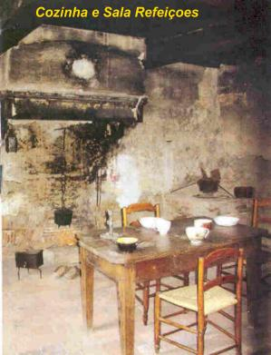
A humildade, que é a rainha das virtudes cristãs na ordem prática, foi para o Cura d’Ars uma norma de vida e de perfeição. O Padre Raymond, que foi uma das testemunhas de sua vida e uma das testemunhas mais severas, teve de se curvar ante a maravilha de sua humildade. Dizia: “Uma das coisas que mais me impressionou no Cura d’Ars, foi resistir de modo admirável àquela verdadeira embriaguez de continuas aclamações por parte da multidão. Ele compreendia tudo muito bem, via claramente que era ele que o povo buscava em Ars. Mesmo assim, jamais descobri um sentimento de orgulho em seu coração, nem uma leve palavra de vaidade nos seus lábios”.
O Cura d’Ars não ignorava o bem que fazia com o seu ministério, mas considerando-se como simples instrumento, atribuía toda a glória a Quem pertencia de fato e por direito. “Sou como um cinzel nas mãos de DEUS”, disse um dia ao Irmão Atanásio. Mas não lhe foi possível abafar as unânimes e calorosas aclamações que cada vez mais cresciam em torno dele. Pelo contrário, sua fama de santidade nasceu espontaneamente e aumentou, apesar dos perseverantes esforços de sua profunda humildade. Segundo conta o Padre Toccanier, o Cura costumava a dizer: “A humildade é entre as virtudes, o que a corrente é para as contas do Rosário: rebentando a corrente, todas as contas caem. Tire-se a humildade e todas as virtudes desaparecem”.
Joana Chanay contava: “Em suas meias havia tantos cerzidos que, sem dúvida, deviam ocasionar calos em seus pés”.
Um dia Catarina Lassagne o surpreendeu remendando as calças. A moça ficou olhando encostada no batente da porta de entrada do quarto dele. Disse o Santo em tom de gracejo: “Catarina, pensava encontrar o teu Cura e encontrou um alfaiate”! Antes de começar a grande afluência de peregrinos, possuía somente uma batina, cujos remendos e cerzidos não se podiam contar, porque eram muitos. Esta pobreza voluntária um dia o colocou em grande aperto. Era inverno e chovia. Regressava de uma Paróquia vizinha, situada na região dos brejos. Estava completamente molhado e as vezes, escorregava e caía na lama do caminho. Sabia muito bem que ir para casa daquela maneira, onde não tinha outra roupa para mudar, seria uma grande imprudência. Foi direto a casa de um paroquiano, a quem contou a sua dificuldade. Este, comovido, tratou de ajudá-lo. Emprestou-lhe uma veste e pôs a batina a secar junto ao fogo. Quando se multiplicaram as visitas dos peregrinos, convenceram-no de que não era conveniente trajar mais um vestuário tão velho e tão miserável.
Na verdade, o Padre João Maria, ganhava quase que semanalmente: roupas, sapatos, utensílios de cozinha, adornos para casa, roupas de cama, toalhas e muito dinheiro. Tudo, sem reservar nada para si, distribuía consciente e alegremente aos pobres e necessitados. E fazia isto por amor a DEUS, que via em cada um dos pobres que se aproximavam dele. Sentia-se feliz, muito feliz, de se manter humilde, vestindo os seus próprios trapos e ver os seus pobres sorridentes e agradecidos. O Conde de Garets dizia: “Seu coração se compadecia de todos os miseráveis. Amava ternamente os desventurados. Por eles se despojava de tudo: dava todas as coisas sem cessar. Para poder dar esmolas vendia tudo que lhe era possível: seus móveis, sua roupa e os mais insignificantes objetos de próprio uso”.
Nos últimos anos de vida, o dinheiro que mensalmente arrecadava, lhe permitia pagar aluguel para umas trinta famílias que moravam em casa alugada, em Ars e nos arredores. Algumas famílias também recebiam lenha e farinha.
Tinha muita compaixão da pobre Bichet, infeliz cega de Ars que vivia ao lado da Igreja. Ele se aproximava dela devagarzinho, depositava comida ou dinheiro em seu avental e se retirava sem dizer nada. A pobre cega, pensando que fosse alguma vizinha caridosa, dizia de cada vez: “Obrigada, minha amiga, muito obrigada”. O senhor Cura saía na pontinha dos pés, rindo gostosamente.
Certo dia de verão, um pouco antes das 12 horas, o Cura d’Ars, sentado em sua pequena cadeira, catequizava uma multidão de peregrinos. O povo se apinhava até a porta da Igreja, não havia mais o menor espaço para ninguém, quando chegou um pobre carregando um grande saco cheio de ferramentas e materiais, apoiado em muletas. Queria entrar, mas era impossível! O senhor Cura presenciava suas inúteis tentativas. De repente ele se levantou, atravessou a multidão e conduziu o mendigo pela mão até o estrado onde estava e o colocou sentado em sua cadeira. E de pé, como se nada tivesse acontecido, continuou falando ao povo.
PACIÊNCIA E MORTIFICAÇÃO
O amor a
pobreza e aos pobres tinha raízes no próprio temperamento do Cura d’Ars, pois
ele era um homem 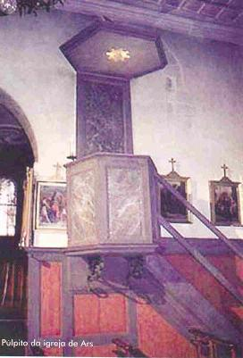
Conta João Pertinand: “Um dia surpreendi um menino que frequentava a paróquia, roubando as esmolas da Missa. O Padre Vianney não viu e nem sabia do caso. O Chefe da Prefeitura e eu fomos avisar os pais do menino. A mãe do ladrãozinho julgando ter sido o Cura d’Ars que denunciou o menino, no dia seguinte foi a sacristia encontrar o Padre, onde lhe fez as mais grosseiras e amargas reprimendas. Eu estava na Igreja, de pé, junto à porta e ouvi aquela chuva de impropérios! O senhor Cura contentava-se em responder:” “A senhora tem razão, reze por minha conversão”.
Essa admirável paciência manifestou-se de modo especial entre a multidão. Na verdade, era ali onde sempre encontrava ocasião de exercitar a renúncia. Os que queriam se aproximar dele ansiavam por vê-lo e os que já tinham visto, queriam vê-lo outra vez. Dizia o Cônego Gardette: “Em torno de sua pessoa formavam-se duas correntes que se agitavam em todos os sentidos. Mas coisa admirável! Comprimido e quase sufocado, parecia um Anjo de caridade e doçura, com habilidade vencia as distâncias e satisfazia a todos. E, no entanto, o seu temperamento tão enérgico e sensível devia sentir uma intensa contrariedade”.
O Padre Toccanier vendo-o tão calmo, apesar dos empurrões lhe disse: “Senhor Cura, se os Anjos estivessem em seu lugar, aposto que se incomodariam”!
O recém chegado Padre coadjutor que o Cura d’Ars havia solicitado a Diocese para ajudá-lo, só pensava em suplantá-lo, tomar a direção da peregrinação e assumir o comando da paróquia, para um dia ser o Cura d’Ars. Não percebia que na ausência do Santo a aldeia voltaria à obscuridade como era antes de 1818. Brusco, irrefletido nas suas decisões, jactava-se de ser sábio e eloquente, tratando o Padre Vianney que inclusive tinha sido o seu benfeitor e que lhe era superior hierárquico, “com dureza, sem nenhuma atenção e sem o respeito devido aos seus anos de vida e a sua santidade”. Na verdade, o Padre Raymond, causou muitos aborrecimentos e tristezas ao Padre Vianney, que a tudo suportava silenciosamente, com uma paciência impressionante.
Apreciando a paciência indescritível do Padre Vianney, o que não dizer das suas mortificações? Disse o Conde de Garets: “O Cura d’Ars é um homem que matou completamente em si mesmo o velho Adão, e que jamais concedeu satisfação alguma à sua natureza humana. Sua mortificação foi extrema e lhe abrangeu toda a vida”. Na antiga casa paroquial de Ars se conservam como troféu de vitória, as disciplinas e os cilícios do Padre Vianney. Mas o seu principal instrumento de penitência não está ali, deixaram-no na Igreja: é o Confessionário.
O Cônego Aleixo Tailhades, de Montpellier, que passou com ele parte do inverno de 1838, conta: “Os pés do pobre Cura se achavam em tão péssimo estado que a pele dos calcanhares saía nas meias quando à noite as descalçava”.
Para atenuar a dureza da tábua em que se assentava, experimentaram colocar sobre ela umas almofadas de palha. Ele as rejeitou.
Além de todos aqueles sacrifícios já descritos aqui, o Padre Vianney impôs outros, penosos e drásticos, que praticava junto com as suas orações, intercedendo junto a DEUS em benefício da conversão dos pecadores e para sufrágio das almas que padecem no Purgatório. Foi assim que impôs o sacrifício de não comer frutas e não beber água em dias de grande calor. Seu coração estava sem pecado, e, contudo, pelo espaço de quarenta anos jejuou e se flagelou pelos pecadores.
INTUIÇÕES E PREDIÇÕES
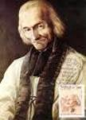
Sem demora, o Conde quis esclarecer o equívoco, embora tenha percebido com admiração que o senhor Cura tinha falado o nome da empregada, sem que ele lhe tivesse revelado o nome dela. Dirigiu-se a Pia de Água Benta na entrada do Templo, Maria não estava. Ela também não é encontrada entre os peregrinos que entram e saem da Igreja. Procura no fundo e no meio do povo, nada. Resolve entrar no Coro, onde meia-hora antes o Cura d’Ars mencionou que ela estava lá. Com efeito, a encontrou em oração atrás do Altar-Mor, num lugar onde o Padre Vianney, de onde estava não podia vê-la de maneira nenhuma. O cavalheiro incrédulo ficou ainda mais estupefato quando chamando a criada pelo nome, ela o ouviu e olhou sorrindo! Estava curada da sua surdez!
Uma criadinha empregada na casa da família Cinier, em Ars, tinha uma grave acusação nos lábios para revelar em confissão, mas no momento, perturbada, contou os outros pecados, deixando aquele para depois. O Santo perguntou: “E aquilo, que você não disse, mas que cometeu”? Ela assustada com a revelação do Padre, pensou: “Como ele sabe disso”! O Padre Vianney cortou o pensamento dela e disse em seguida: “O teu Anjo da Guarda me falou”.
Uma jovem de Lion que encontrara em Ars com o Cura, dizia sorrindo a sua mãe: “Creio que o bom Cura se enganou sobre o meu futuro, asseverando que eu seria a Superiora de uma Casa de Beneficência”. Entretanto, com o passar dos anos, os fatos demonstraram que o Cura d’Ars tinha visto claramente o futuro dela. E ela rendendo homenagem a visão do Padre, exclamou: “Sim, nele está um DEUS escondido que o ilumina”!
Em 1855, a jovem Rosa Bossan, irmã do arquiteto de Fourviere, dizia confidencialmente ao Cura d’Ars: “Meu Pai, vou me casar em breve, tenha a bondade de me dar a sua benção”. Ao invés de abençoá-la, o Santo começou a chorar: “Oh! Filha, quão infeliz será”... Disse a moça: “Mas, então o que fazer meu Pai”? Disse o Santo: “Entra para a Visitação”... “Entra, minha filha, apressa-te, não chegarás aos 50 anos de idade para tecer a tua coroa”. A senhorita Bossan morreu com o nome de Sóror Maria Amada, no dia 13 de Agosto de 1888, sendo Mestra de Noviças no Convento da Visitação de Fourviere. No dia 8 de Julho tinha completado 49 anos de idade.
A jovem Bernard, de Fareins, desejava ser religiosa. “Não. A senhorita não será religiosa”, disse-lhe sem hesitar o Padre Vianney, “mas sim a sua irmã casada”. De fato, aquela senhora ficou viúva pouco depois, desgostou-se do mundo e tomou o hábito das Ursulinas de VilleFranche, onde morreu como religiosa. Quanto à senhorita Bernard, permaneceu com seus pais. Adoecendo gravemente, pediu que chamassem o Cura d’Ars. Ele veio. Ela lhe perguntou: “Vou morrer”? (era o mês de Junho) Disse o Cura: “Agora não, filha, chegarás até o dia da Assunção de NOSSA SENHORA”. (15 de Agosto). E naquele dia ela faleceu.
Sebastião Germain, nascido em Misérieux, era sobrinho de Maria Filliat, professora na “Casa da Providência” de Ars. Na infância, teve a oportunidade de ajudar varias vezes a Santa Missa celebrada pelo Cura d’Ars. Casou-se e foi pai de três filhos, mas estava triste porque desejava ter uma menina e só tinha homens. No mês de Junho de 1859, foi visitar o Padre Vianney e o encontrou na Praça com uns Rosários nas mãos. Sem esperar que ele lhe explicasse o motivo de sua visita, disse o Santo, dando-lhe quatro Rosários: “Toma, são para teus filhos”. Falou Sebastião: “Mas, senhor Cura, eu só tenho três meninos”. Disse o Padre: “Meu Sebastião, o quarto Rosário será para a tua menina que vai nascer” . No ano seguinte a pequena Maria veio encher de alegria o lar do casal Germain. Anos mais tarde, já casada, senhora Maria Germain Jallat, dizia com alegria: “Meu pai me deu este pequeno Rosário de contas de madeira com corrente de ferro, que ainda conservo como preciosa relíquia do Cura d’Ars”.
ALGUNS MILAGRES
O Servo de
DEUS sabia que em sua Paróquia aconteciam coisas extraordinárias. Percebendo a
origem da intensa 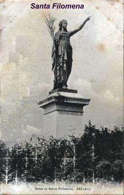
Mas os milagres se sucediam e atraiam muita gente a Ars. A humildade do Santo não tinha limites. Um dia o Padre Toccanier, seu Auxiliar, lhe disse: “Senhor Cura, corre um boato contra Vossa Reverendíssima”. Perguntou Padre Vianney: “Qual é amigo”? – “Parece que V. Reverendíssima proibiu a Santa Filomena de fazer milagres aqui”. Respondeu ele: “É verdade. Isso dava muito que falar. Pedi a Santa Filomena que cure aqui quantas almas quiser, mas quanto ao corpo, que os cure mais tarde! E desta vez ela me ouviu: muitas pessoas enfermas vêm aqui começar sua novena e vai terminá-las em suas casas, onde têm sido ouvidas pela Santa”.
Depois disso, não se poderia dizer que o Cura d’Ars havia feito um pacto com a sua Santa predileta? Pois bem, muitas vezes o milagre se operava no principio da novena... Então, ouviam-se divertidas censuras do Cura d’Ars, como por exemplo, depois da cura de um menino aleijado: “Minha querida Santa Filomena faltou a palavra. Deveria ter curado esta criatura em outro lugar”. Mas, com o seu coração delicado, logo depois mudava subitamente seu parecer, pois receava que com a sua brincadeira, fosse causar algum desgosto a sua Santinha.
A Irmã Dorotéia, religiosa da Providência de Vitteaux, achava-se doente do peito e o médico havia dito: “Morrerá na entrada do inverno”. Ela foi a Ars. O Cura ao vê-la entre a multidão concedeu-lhe acesso franco ao confessionário e logo perguntou: “Minha Irmã, para que deseja ser curada”? Ela expôs as suas razões e o Santo lhe disse: “Bem, vá ao altar de Santa Filomena pedir a sua cura; entretanto eu rezarei por você”. Sóror Dorotéia foi rezar à virgenzinha mártir e, de repente, sentiu-se curada. Isto aconteceu em Maio de 1853 e ela tinha 24 anos de idade. A religiosa ficou curada e trabalhou toda a sua vida, morrendo com 89 anos de idade na Providência de Vitteaux, no dia 11 de Fevereiro de 1914.
Uma jovem dos arredores de Charlieu (Loire), paralítica de um lado, ainda podia caminhar, mas não tinha nenhuma movimentação com o braço direito. No confessionário começou a contar ao Cura a sua longa história de misérias. O Santo a interrompeu dizendo-lhe: “Vá dizer isso à Santa Filomena”. Ela atravessou com dificuldade a multidão apinhada e ajoelhou-se no altar da Santa e suplicou: “Querida Santa Filomena, me restitui o meu braço ou então, me dá o vosso”. Curada ali mesmo, repleta de felicidade, a moça correu até o Orfanato na “Casa da Providência”, para contar o milagre a sua amiga Catarina Lassagne.
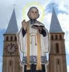
No dia 1º de Fevereiro de 1850, Claudina Venet de Virégneux, pequena aldeia do cantão de Saint-Galmier, no Loire, foi levada a Ars. Em consequência de um derrame cerebral havia ficado completamente surda e cega. O Padre Vianney nunca vira aquela desventurada e ninguém lhe falara a seu respeito. Pois bem, enquanto ela estava diante da porta da Igreja, passou o Santo. Sem dizer qualquer palavra tomou a cega pela mão e levou-a ao confessionário, onde mandou que ela se ajoelhasse. Apenas a abençoou e os olhos de Venet se abriram a luz e seus ouvidos ouviram! Parecia que ela tinha despertado de um letargo. Mas, acabada a confissão, o Servo de DEUS fez-lhe esta advertência: “Sua vista está curada, mas ficará surda ainda por espaço de doze anos. É a vontade de DEUS e que assim seja”. Claudina Venet saiu só da sacristia. Ao se separar do Santo sacerdote notou que seus ouvidos novamente se cerraram, não ouviu mais nada. Esta enfermidade, conforme a predição do Santo persistiu por 12 anos. Tranquila e resignada, desfrutou da vista recobrada milagrosamente e aguardou o dia de seu total restabelecimento. Qual não foi a sua alegria quando no dia 18 de fevereiro de 1862, se achou completamente curada. No final da reza de um Terço seus ouvidos se abriram totalmente, como se lhe tivessem arrancado os tampões que os fechavam.
O milagre é o
sinal do Divino, é a prova de DEUS neste mundo. A santidade, entretanto, pode
existir sem o milagre. Ainda que o Cura d’Ars não tivesse feito nenhum prodígio,
nem por isso seria menos Santo. Mas nele, o SENHOR concedeu os dons e as
virtudes que o tornou um completo e admirável Santo. 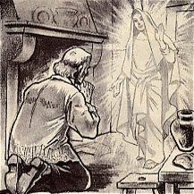
O Padre João Maria Batista Vianney narrava de boa vontade as suas lutas contra o inferno, mas deixava obstinadamente ocultas as recompensas tão legítimas que recebia do Céu. O Servo de DEUS não gostava de falar dos favores celestes que recebia e quando insistiam, habilmente mudava de assunto, contando passagens e fatos ocorridos na Vida dos Santos, que lia com frequência e com muito prazer.
Alguns fatos revelando algo mais que simples intuições, mas revelações verdadeiras indicam que o Santo Cura, por um privilégio especial de DEUS, pode contemplar mais de uma vez com os seus próprios olhos, coisas do outro mundo. È certo que recebeu por diversas vezes, a honrosa e especial visita da SANTÍSSIMA VIRGEM MARIA e de Santa Filomena, a Santinha Mártir de sua devoção, assim como, viu NOSSO SENHOR na Sagrada Eucaristia e ouviu a sua voz, conforme depoimentos constantes no processo canônico.
O cônego João Gardette, Capelão do Carmelo de Chalo-sur-Saone, no processo de canonização, sob juramento de fé, deu o seguinte testemunho:
“Meu irmão, Cura de Saint-Vicent-de-Chalon-sur-Saone, achava-se comigo em Ars. À noite, enquanto o Servo de DEUS rezava a oração, nos colocamos diante do púlpito. No meio do piedoso exercício, quando o Cura d’Ars rezava o Ato de Caridade, meu irmão, observou que ele se elevava, pouco a pouco, até que seus pés subiram acima da borda do púlpito num fenômeno de levitação chamado de êxtase ascensional. Sua face estava transfigurada e envolvida numa auréola. Meu irmão olhou ao redor e não observou nenhuma comoção da parte dos assistentes, o que significa dizer que as pessoas nada viram, mas quando saiu da Igreja, não pode guardar segredo daquele notável prodígio que presenciou e contou para todos, com voz alta e muito entusiasmo”.
No último ano de vida, seguindo com perseverante sacrifício e contínuo heroísmo, a sua idealizada missão de salvar almas para DEUS, aconteceu um diálogo maravilhoso com o Padre Toccanier, seu coadjutor paroquial. Perguntou-lhe um dia o jovem missionário: “Meu Padre, se DEUS lhe desse a escolher entre subir ao Céu imediatamente ou trabalhar ainda, como faz, na conversão dos pecadores, o que escolheria”? Respondeu o Cura: “Ficaria aqui”. Argumentou o coadjutor: “Mas no Céu os Santos são tão felizes, lá não há penas e nem tentações”! Replicou o Santo: “Sim, é verdade, os Santos são muito felizes, mas só podem desfrutar de suas rendas (ou seja, da felicidade que alcançaram de DEUS). Trabalharam muito, pois DEUS castiga a preguiça e só premia o trabalho. Mas eles não podem mais como nós, ganhar almas para DEUS com os nossos trabalhos e sofrimentos.” Então, o Padre Toccanier perguntou: “Se DEUS o deixasse aqui até o fim do mundo, teria Vossa Reverendíssima muito tempo, não é verdade? Diga-me, também continuaria se levantando tão cedo pela manhã, para atender as confissões (a uma hora da madrugada) na Igreja”? Respondeu o Cura d’Ars: “Ah! Meu amigo, sempre me levantaria à meia-noite. Não é o cansaço que me espanta: seria o mais feliz dos sacerdotes em exercer este ministério, se não fosse o pensamento que me preocupa: hei de comparecer como Pároco diante do Tribunal de DEUS! E tenho honrado dignamente o ministério”? E duas grossas lágrimas rolaram por suas faces.
ÚLTIMA ENFERMIDADE E MORTE
O fim do mês de Julho de 1859 foi verdadeiramente abrasador. Um sol forte de verão castigava aquela região, sem que houvesse nenhuma brisa de ventilação. Só o Santo permanecia no confessionário, mártir de sua heróica abnegação.
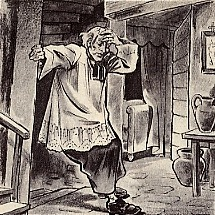
Cerca de uma hora depois, sentindo frio, apesar da atmosfera sufocante, deu umas pancadinhas para chamar alguém. Catarina Lassagne, sem o Cura saber, estava de prontidão no quarto vizinho, foi a primeira a acudir. Ele disse suspirando: “É o meu fim, chamem o Cura de Jassans” (que era o confessor dele). O Cura de Jassans, Padre Luis Beau e o médico Dr. Saunier, chegaram praticamente juntos ao raiar do dia. O médico só soube afirmar que o enfermo tinha chegado a uma debilidade extrema. Não tinha forças para reagir. “Se o calor diminuir ainda haverá alguma esperança, mas se continuar vamos perdê-lo”.
O Padre Luis Beau, seu confessor que ficou até o último momento, como testemunha daquele fim sublime, disse: “Estava em plena lucidez de espírito.Confessou-se com a piedade costumeira, sem perturbação e sem dizer nenhuma palavra sobre o seu mal. Não manifestou desejo de recobrar a saúde”.
No dia 3 de Agosto, o Padre Luis Beau
encomendou sua alma em presença de vários eclesiásticos. Ele estava calmo
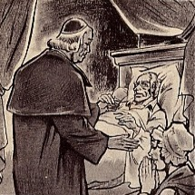
Às 22 horas o Cura d’Ars pareceu chegar ao fim. O Padre Toccanier, seu coadjutor, aplicou-lhe a indulgência plenária em artigo de morte. À meia-noite o Padre Monnin deu-lhe para beijar o Crucifixo de Missionário e começou as orações dos agonizantes. Na quinta-feira, dia 4 de Agosto de 1859, às duas horas da madrugada, quando o jovem sacerdote terminava de ler as orações e com voz trêmula dizia estas palavras: que os Santos Anjos de DEUS saiam ao teu encontro e te introduzam, na Jerusalém Celeste, São João Maria Batista Vianney, apoiado nos braços do Irmão Jerônimo, “sem agonia entregou sua alma a DEUS”, com a idade de 73 anos e quase 11 meses de vida e com quarenta e um anos e quase seis meses como o Cura d’Ars. Assim que ele exalou o último suspiro, todos emocionados rodearam o seu cadáver.


O Santo se manifestara dizendo que não queria ser despido depois de morto, que fosse sepultado com suas vestes habituais. Ele temia que fossem descobertas em seu corpo, os sinais de suas terríveis e vigorosas macerações. Mas sua vontade não foi obedecida, e com ternura indizível, os missionários e os Irmãos puderam contemplar aquela venerável relíquia, aqueles membros santificados pela flagelação, verdadeira imagem da extenuação humana levada ao último grau.


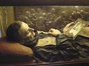
Depois do responsório, entoado por Sua Excelência Monsenhor Langalerie, o caixão foi colocado na Capela de São João Batista, diante do confessionário, agora vazio, em que o Servo de DEUS consolou tantas almas. Ali permaneceu até o dia 14 de Agosto, quando o corpo foi depositado numa sepultura aberta no centro da nave da Igreja. Sobre ela colocou-se uma lápide de mármore preto, em que se gravaram em forma de cruz, um cálice e esta simples inscrição: AQUI JAZ JOÃO MARIA BATISTA VIANNEY, CURA D’ARS. Os restos mortais, do Servo de DEUS descansaram ali por cinquenta anos, de 1859 a 1904.
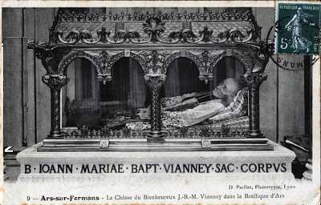
A 21 de Novembro de 1862, Monsenhor Langalerie, com grande alegria de todos os fiéis, instituiu o Tribunal Eclesiástico, cujo fim era inquirir sobre a vida e as virtudes, os milagres e os escritos do Servo de DEUS. É o Processo Ordinário, que foi encerrado com um vastíssimo e valioso material no dia 6 de Março de 1865. Dias após Monsenhor Langalerie levou para Roma, cópia autêntica do processo com 1.674 páginas, e a entregou à Sagrada Congregação dos Ritos. Em seguida foi montado no Vaticano o Processo Apostólico. A 3 de Outubro de 1872, Sua Santidade o Papa Pio IX, assinou o mandamento que abria a data das sessões decisivas. Por esse fato João Maria Batista Vianney era declarado Venerável. Dos 17 casos de cura apresentados, foram escolhidos dois pelo advogado da causa Padre Morani: “A Cura de Adelaide Joly e a cura de Léon Roussat”, os quais foram perfeitamente acolhidos pelas autoridades. No dia 21 de Fevereiro de 1904, o Papa Pio X promulgou o decreto pelo qual reconhecia os dois milagres como autênticos e válidos para a Beatificação do Venerável Cura d’Ars. A celebração da Beatificação aconteceu na Basílica de São Pedro no Vaticano no dia 8 de Janeiro de 1905.
Ao se aproximar a beatificação, no dia 17 de Junho de 1904, foi retirado da tumba o corpo do Venerável Vianney. Viu-se com agradável surpresa que os membros se conservavam intactos. A pele estava enegrecida e as carnes murchas, mas incorruptas. O rosto, entretanto, apesar de bem reconhecível, experimentara, contudo, um pouco a destruição da morte. Com grande alegria verificaram que o seu coração se achava intacto e pôde então, ser conservada a parte tão preciosa relíquia. Os sagrados despojos foram tratados e depositados num relicário, no altar de mármore, sob um baldaquim de pedra lavrada, sustentado por colunas de cipolina.
Por um decreto pontifício de 12 de Abril de 1905, o Papa Pio X o declarou: “PATRONO DE TODOS OS SACERDOTES QUE TÊM CURA DE ALMAS NA FRANÇA E NOS TERRITÓRIOS DE SEU DOMÍNIO”.
Em 1916, sob o episcopado de Monsenhor Manier, no pontificado do Papa Bento XV, como prova de santidade, foram escolhidos dois outros milagres acontecidos pela intercessão do Bem-Aventurado Vianney, exigidos para a sua Canonização: “As curas de Sóror Eugênia e de Matilde Rougeol”. No dia 1º de Novembro de 1924, no Vaticano, em presença de Sua Santidade o Papa Pio XI, foi feita a leitura do decreto pelo qual se aprovava os dois milagres atribuídos ao Cura d’Ars. No domingo, foi lido diante do Papa, o decreto de tuto, que permitia a Canonização do Bem-Aventurado Vianney. No dia 31 de Maio de 1925, Festa de Pentecostes, o humilde sacerdote recebeu a honra suprema da Igreja. Pio XI, com sua bela voz, ampliada pelos alto-falantes pronunciou: “Declaramos SANTO e escrevemos no Catálogo dos Santos o Bem-Aventurado JOÃO MARIA BATISTA VIANNEY”.
Com a Canonização, o decreto pontifício completou a sua abrangência, sendo o Padre Vianney proclamado: “MODELO, EXEMPLO E PATRONO DE TODOS OS SACERDOTES”.